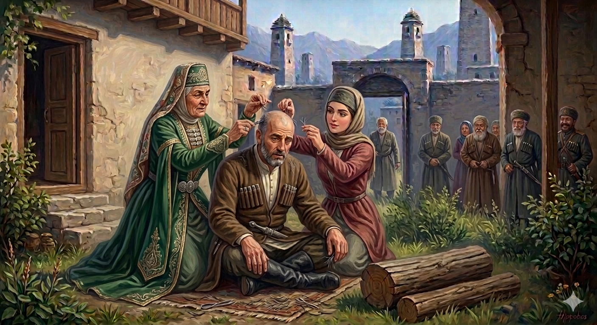

И.А. Дахкильгов. Хьехаме дувцарш - поучительные рассказы-притчи.
И.А. Дахкильгов. Хьехаме дувцарш - поучительные рассказы-притчи. Из ингушского фольклора.

Исташа мустваь къонах
Цхьа ткъаьх шу сесагаца цхьана вахаш даьккхачул тӀехьагӀа, цхьан къонахчоа дагадехад шоллагӀа йола саг йоалае. Халча эттад цун вахар. ЙоккхагӀча сесага дезаш хиннадац ший мар кхы а къона ва оалалга, цудухьа геттар тӀехьадетташ а хиннад цо, къавеннав хьо, оалаш. ЗӀамагӀча сесега а нахаца яхь хиннай. Ший мар волчул къонагӀа ва алар дийзад цунна. Дукха ха яьллалехьа къонахчун беррига корта мустабенна хиннаб. Наха хаьттад цунга, ер фуд хьа, аьнна. ТӀаккха жоп деннад цо: - Вай ӀаьдалагӀа, цхьа бийса йоккхагӀча сесагаца йоаккх аз, вож цхьа бийса зӀамагӀчунца йоаккх. ЙоккхагӀчо керта тӀара Ӏаьржа чеш увзадеш дӀадоах, зӀамагӀчо кӀайденнараш дӀадоах. ХӀанза шоана гуш дола хьал дакха цар сога оттийтар!
РУССКИЙ
Жены обкорнали мужа
Некий муж прожил с женою лет двадцать, а затем привел в дом вторую, молодую, жену. Старшая жена стыдила мужа, говоря, что он уже стар. Младшая же хотела, чтобы ее муж выглядел молодым. Через какое-то время голова мужчины совершенно облысела, будто все волосы у него повылазили. Случившимся поинтересовались друзья мужчины и он им ответил: "Согласно нашему обычаю, я одну ночь провожу с одной женой, вторую - со второй. Старшая у меня выдергивала черные волосы, а младшая - седые. И вот теперь я облысел, потому что жены обкорнали всю мою голову".
ENGLISH
The wives cut off their husbands' hair
A man had lived with his first wife for twenty years before bringing a second, younger wife into the house. The older wife shamed her husband, pointing out that he was old. However, the younger wife wanted her husband to look young. After a while, the man's head became completely bald as if all his hair had fallen out. His friends asked him what had happened, and he replied, "According to our custom, I spend one night with one wife and the next with the other. My older wife used to pull out my black hair and my younger wife used to pull out my grey hair. Now I've gone bald because my wives have plucked all my hair out."
НОХЧИЙН
Зударша кӀунзал бина къонах
Цхьа ткъех шо зудчуьнца цхьана вехаш даьккхинчул тӀехьа, цхьана къонахчун дагадеъна шолгӀа йола зуд йала йан. Холче хӀоьттина цуьнан вахар. Йоккхачу зудчунна дезаш хилла дац шен майра кхин а къона ву олийла, цу дуьхьа гуттар тӀехдетташ а хилла цо, къанвелла хьо, олуш. Жимачу зудчунна а нахаца йахь хилла. Шен майра волучул къона ву алар дезна цунна. Дукха хан йалале къонахчун берриг корта кӀунзал баьлла хилла. Наха хаьттина цуьнга, хӀара хӀун ду хьан, аьлла. ТӀаккха жоп делла цо: - Вай Ӏедалехь, цхьа буьйса йоккхачу зудчуьнца йоккху ас, важа цхьа буьйса жимачуьнца йоккху. Йоккхачо коьртан тӀера Ӏаьржа чоьш ийзадеш дӀадоха, жимачо кӀайндеш дӀадоха. ХӀинца шуна гуш долу хьал ду-кх цара соьгахь хӀоттийнарг!
ПОГОВОРКИ
Ахьа хӀама йоаца хьайра санна латт дезал боаца ков. - Двор без семьи (большой), что мельница без зерна.БӀаргадейнар тешамегӀа да хезачул. - Увиденное вернее услышанного.Даь сесага корта къемата дийнахьа хьайро йохьаргба. - Голову мачехи в судный день будут на мельнице молоть.Цамогаш хилча бу унахцӀенонна мах. - Цену здоровья узнают только заболевши.Деналои майролои къанахчун сий доаккх. - Мужество и храбрость возвышают честь мужчины.Вира цӀог лаьцар – хиво вихьав, дына цӀог лаьцар – хих ваьннав. - Кто при переправе держался за хвост осла, утонул, а кто за хвост коня – переплыл.Ды массаз къувкъа делхац догӀа. - Не всегда идет дождь, когда гром гремит.Лаьтта Ӏа кегадой, дошон тӀа кхоачаргва хьо. - Будешь копаться в земле – наткнешься на золото.Фусам-да дика волча цӀагӀа хьаьший дукхагӀа ух. - К хорошему хозяину гости чаще ходят.Ший цӀагӀа дика хинна йоӀ наьха цӀагӀа а во хила йиш яц. - Хороша в девичестве – хороша и в замужестве.Хьалха аьнначун да дош. - Слово остается за тем, кто первым его произнес.